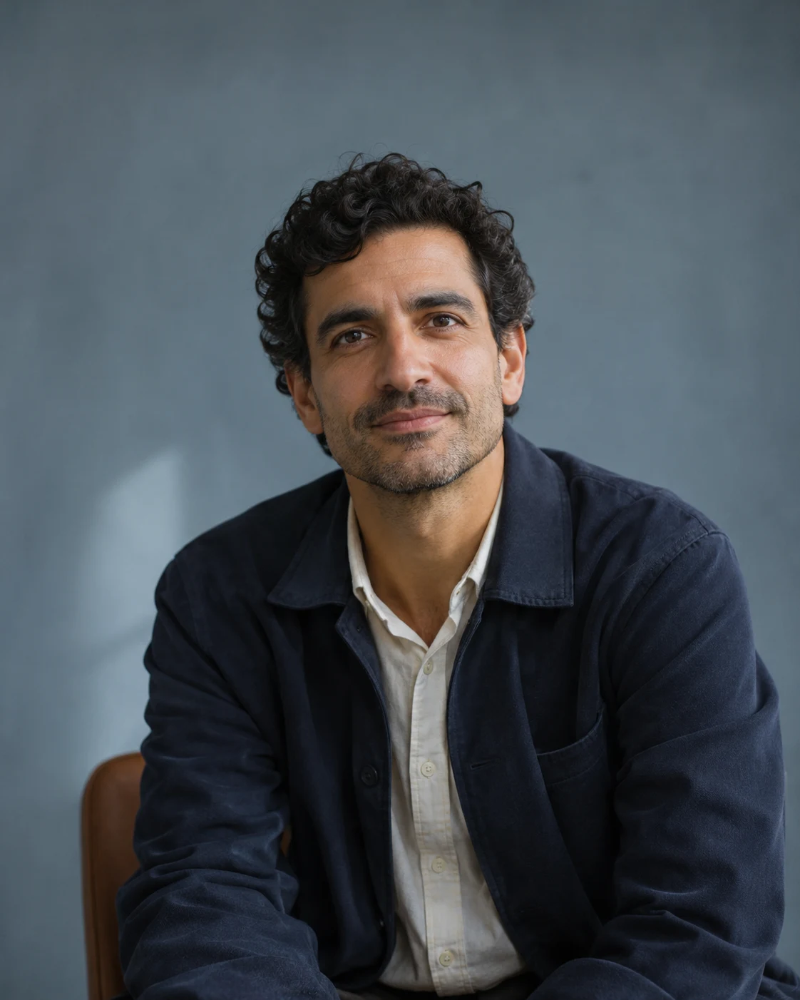

How teams make decisions
A talk about what really happens when a group has to choose: who is in the room, what information is used, how a decision is agreed and how it gets reviewed afterwards.

Design demonstration, fictional speaker
Daniel Reed speaks at conferences, summits and company events, on stage or live online. Three talks, each with its own question. Pick the one your audience is facing.
Explore the talksEach keynote runs from 20 to 60 minutes. Read the three descriptions and choose the question your teams are living with now.
A talk about what really happens when a group has to choose: who is in the room, what information is used, how a decision is agreed and how it gets reviewed afterwards.
A talk about acting when the picture is incomplete. It looks at how teams talk about what they do not yet know and how they keep moving while it is still unclear.
A talk about taking an idea and making it testable: framing a small question, running a trial and deciding what to do with what comes back.
How long is a keynote?
Between 20 and 60 minutes, set to fit your programme.
On stage or online?
Either. Keynotes can be given on stage or live online.
Can there be a workshop as well?
A workshop on the same day can be added if it is discussed.
Which topic should we choose?
Start with the question your teams are stuck on: how they decide, how they cope when things are unclear, or how they test a new idea.